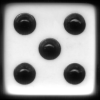
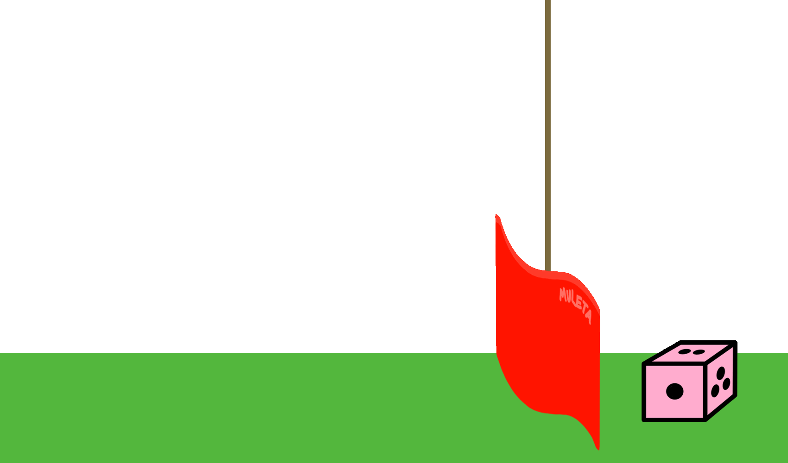

Hog 游戏

我知道了！我要用我的
高阶函数来
掷出更高 的点数。
引言
重要的提交说明：要获得满分：
- 在 07/01（周三）之前提交完成阶段 1 的项目，价值 1 分。
- 在 07/07（周二）之前提交完整的项目。
请尽量按顺序完成这些题目，并在做题过程中为每道题运行
ok测试，因为后面某些题目在实现时会依赖前面的题目。你可以和搭档一起完成这个项目。
在 07/06（周一）之前提交整个项目可以获得 1 分加分。 项目截止日期和检查点截止日期可以申请延期，但提前提交的截止日期不能延期，除非你是因作业延期而获得便利的 DSP 学生。
在这个项目中，你将为一个骰子游戏 Hog 开发一个模拟器和多种策略。你需要把控制语句和高阶函数结合起来使用，具体内容见第 1-3 讲以及在线教材 Composing Programs 的第 1.2 节到第 1.6 节。
过去有些同学在没有仔细阅读题目描述的情况下就尝试实现这些函数，结果经常遇到问题。 😱 在开始写代码之前，请仔细阅读每一段描述。
规则
在 Hog 中，两名玩家轮流行动，目标是第一个在某回合结束时总分至少达到 GOAL 分的人，其中 GOAL 默认为 100。在每个回合中，当前玩家选择若干个（最多 10 个）骰子一起掷出。该玩家本回合的得分就是这些骰子点数之和。然而，掷太多骰子的玩家会有风险：
- Sow Sad。如果掷出的骰子中有任何一个结果是
1，那么当前玩家本轮的得分就是 1，不管其他骰子的点数是多少。
- 示例
1：当前玩家掷 7 个骰子，其中有 5 个是 1。本轮得 1 分。 - 示例 2：当前玩家掷 4 个骰子，全都是 3。由于没有发生 Sow Sad，本轮得
12分。
在普通的 Hog 游戏中，以上就是全部规则。为了让游戏更有趣，我们会加入一些特殊规则：
- Boar Brawl。选择掷零个骰子的玩家，得分是「对手得分的十位数字」与「当前玩家得分的个位数字」之差的绝对值的 3 倍，或者 1，取两者中较大的那个。个位数字指的是最右边的那位数字，十位数字指的是右起第二位数字。如果某位玩家的得分是一位数（小于 10），那么该玩家得分的十位数字为 0。
示例 1：
- 当前玩家有
21分，对手有46分，当前玩家选择掷零个骰子。 - 对手得分的十位数字是
4，当前玩家得分的个位数字是1。 - 因此，该玩家获得
3 * abs(4 - 1) = 9分。
- 当前玩家有
示例 2：
- 当前玩家有
45分，对手有52分，当前玩家选择掷零个骰子。 - 对手得分的十位数字是
5，当前玩家得分的个位数字是5。 - 由于
3 * abs(5 - 5) = 0，该玩家获得1分。
- 当前玩家有
示例 3：
- 当前玩家有
2分，对手有5分，当前玩家选择掷零个骰子。 - 对手得分的十位数字是
0，当前玩家得分的个位数字是2。 - 因此，该玩家获得
3 * abs(0 - 2) = 6分。
- 当前玩家有
- Sus Fuss。如果一个数恰好有 3 个或 4 个因子（包括 1 和它本身），我们就称这个数为 sus。如果掷完骰子之后，当前玩家的得分是一个 sus 数，那么他的得分会立即增加到大于当前得分的最近一个质数。
示例 1：
- 某玩家有 14 分，掷 2 个骰子得到 7 分。他的新得分会是 21，而 21 有 4 个因子：1、3、7 和 21。因此 21 是 sus 的，该玩家的得分立即增加到下一个质数 23。
示例 2：
- 某玩家有 63 分，掷 5 个骰子，本轮只得到 1 分。他的新得分会是 64（Sow Sad 😢），而 64 有 7 个因子：1、2、4、8、16、32 和 64。由于 64 不是 sus，该玩家的得分保持不变。
示例 3：
- 某玩家有 49 分，掷 5 个骰子共得 18 分。他的新得分会是 67，而 67 是质数，有 2 个因子：1 和 67。由于 67 不是 sus，该玩家的得分保持不变。
下载起始文件
要开始的话，请把项目代码全部下载为一个 zip 压缩包。
下面是解压后你会在压缩包中看到的所有文件列表。
在这个项目中，你只需要修改 hog.py。
hog.py：Hog 的初始实现dice.py：用于制作和掷骰子的函数hog_gui.py：Hog 的图形用户界面（GUI）（已更新）ucb.py：AHUT_1A 的实用函数hog_ui.py：Hog 的基于文本的用户界面（UI）ok：AHUT_1A 自动评分器tests：ok使用的测试目录gui_files：存放 Web GUI 所用各种文件的目录
你可能还会看到上面未列出的一些文件——它们是让自动评分器和部分 GUI 正常工作所必需的。除了 hog.py 之外，请不要修改任何文件。
事务安排
你需要提交以下文件：
hog.py
对于我们要求你完成的函数，我们可能会提供一些初始代码。如果你不想使用这些代码，可以删掉它们，从零开始写。你也可以按自己的需要添加新的函数定义。
但是，请不要修改任何其他函数，也不要编辑上面未列出的文件，否则你的代码可能无法通过自动评分程序的测试。另外，请不要改动任何函数签名（名称、参数顺序或参数个数）。
在整个项目中，你都应该测试代码的正确性。经常测试是个好习惯，这样容易定位问题。但也不要测试得过于频繁，要留出时间把问题想清楚。
我们提供了一个名为 ok 的自动评分程序，帮助你测试代码并跟踪进度。第一次运行时，它会要求你通过网页浏览器登录 Ok 账号，请照做。每次运行 ok，它都会把你的工作和进度备份到我们的服务器上。
ok 的主要用途是测试你的实现。
如果你想交互式地测试代码，可以运行
python3 ok -q [question number] -i并填入对应的题目编号（例如
01）。它会运行该题目的测试，直到你第一个失败的测试为止，然后让你有机会交互式地测试自己写的函数。
你也可以使用 OK 的调试打印功能，只要在 print 语句前加上 "DEBUG:"。例如，如果你想查看变量 x 的值，可以这样写：
print(f"DEBUG: x is {x}")
这样终端就会输出内容，而不会因为多出来的输出导致 OK 测试失败。
图形用户界面
我们为你提供了一个图形用户界面（简称 GUI）。目前它还无法运行，因为你还没有实现游戏逻辑。等你完成 play 函数之后，就可以玩到完整可交互的 Hog 了！
完成之后，你就可以在终端运行 GUI，并在浏览器中玩 Hog 了：
python3 hog_gui.py第 1 阶段：游戏规则
在第 1 阶段，你将为一个 Hog 游戏开发模拟器。
问题 0
dice.py 文件用非纯（non-pure）的零参数函数来表示骰子。
这些函数之所以是非纯的，是因为它们每次被调用时都可能返回不同的值，因此调用它们的一个副作用就是改变下次调用时返回的结果。
下面是从 dice.py 中摘录的文档，你需要阅读它才能在本项目中模拟骰子。
# A dice function takes no arguments and returns a number from 1 to n
# (inclusive), where n is the number of sides on the dice.
# Fair dice produce each possible outcome with equal probability.
# Two fair dice are already defined, four_sided and six_sided,
# and are generated by the make_fair_dice function.
def make_fair_dice(sides):
"""Return a die that generates values ranging from 1 to SIDES, each with an equal chance."""
...
four_sided = make_fair_dice(4)
six_sided = make_fair_dice(6)
# Test dice are deterministic: they always cycles through a fixed
# sequence of values that are passed as arguments.
# Test dice are generated by the make_test_dice function.
def make_test_dice(...):
"""Return a die that cycles deterministically through OUTCOMES.
>>> dice = make_test_dice(1, 2, 3)
>>> dice()
1
>>> dice()
2
>>> dice()
3
>>> dice()
1
>>> dice()
2通过解锁以下测试来检验你的理解。
python3 ok -q 00 -u输入 exit() 即可退出解锁程序。
在 Windows 上键入 Ctrl-C 退出解锁程序已知会导致问题，请避免这样做。
题目 1
在 hog.py 中实现 roll_dice 函数。它接受两个参数：一个名为 num_rolls 的正整数，表示掷骰子的次数；以及一个 dice 函数。它返回在一回合中掷 num_rolls 次骰子所得的分数：要么是各次结果之和，要么是 1（Sow Sad）。
- Sow Sad。如果掷出的骰子中有任何一个结果是
1，那么当前玩家本轮的得分就是 1，不管其他骰子的点数是多少。
- 示例
1：当前玩家掷 7 个骰子，其中有 5 个是 1。本轮得 1 分。 - 示例 2：当前玩家掷 4 个骰子，全都是 3。由于没有发生 Sow Sad，本轮得
12分。
要得到一次掷骰的结果，调用 dice()。在 roll_dice 的函数体中，你应当恰好调用 dice() num_rolls 次。
请记住，即使 Sow Sad 在掷骰过程中出现，也要恰好调用 dice() num_rolls 次。这样做你才能正确地模拟一次性掷出所有骰子（用户界面也才能正常工作）。
注意：
roll_dice函数以及本项目中的许多其他函数都使用了默认参数值——你可以在函数定义头部看到这一点：def roll_dice(num_rolls, dice=six_sided): ...参数
dice=six_sided表示roll_dice函数中的dice参数是可选的。如果没有为dice提供值，那么默认使用six_sided。例如，调用
roll_dice(3, four_sided)模拟掷 3 个四面骰子，而调用roll_dice(3)则由于默认参数而模拟掷 3 个六面骰子。
理解问题：
写代码之前，先解锁测试，检验你对题目的理解：
python3 ok -q 01 -u注意：在你解锁对应题目的测试用例之前，你无法使用
ok测试你的代码。
编写代码并检查你的工作：
解锁完成后，开始实现你的解法。你可以用下面的命令检查正确性：
python3 ok -q 01请查看 调试指南！
调试建议
如果测试没有通过，就该调试了。你可以直接用 Python 观察函数的行为。首先，启动 Python 解释器并加载 hog.py 文件。
python3 -i hog.py然后，你就可以对任意数量的骰子调用你的 roll_dice 函数。
>>> roll_dice(4)你会发现，由于它在模拟随机掷骰，上面的表达式每次求值的结果可能都不同。你也可以使用提前固定骰子结果的测试骰子。例如，当你知道骰子会掷出 3 和 4 时，掷两次的结果总和应为 7。
>>> fixed_dice = make_test_dice(3, 4)
>>> roll_dice(2, fixed_dice)
7在大多数系统上，你可以按上箭头键，然后按 enter 或 return 键，来重新求值同一个表达式。要重新执行更早的命令，可以反复按上箭头键。
如果发现了问题，你首先需要修改
hog.py文件来解决问题，并保存文件。然后，为了检查修改是否有效，你必须用exit()或Ctrl^D退出 Python 解释器，再重新运行解释器来测试你所做的修改。无论在终端还是 Python 解释器中，按上箭头键都能访问你之前输入的表达式，即使重启了 Python 也是如此。继续调试你的代码并运行
ok测试，直到它们全部通过。再给一个调试技巧：若想在
ok测试失败时自动启动交互式解释器，可以使用-i。例如，python3 ok -q 01 -i会运行第 1 题的测试，如果测试失败，就会启动一个已加载hog.py的交互式解释器。
题目 2
实现 boar_brawl，它接受玩家当前的分数 player_score 和对手当前的分数 opponent_score，并返回玩家掷 0 个骰子、触发 Boar Brawl 时所得的分数。
- Boar Brawl。选择掷零个骰子的玩家，得分是「对手得分的十位数字」与「当前玩家得分的个位数字」之差的绝对值的 3 倍，或者 1，取两者中较大的那个。个位数字指的是最右边的那位数字，十位数字指的是右起第二位数字。如果某位玩家的得分是一位数（小于 10），那么该玩家得分的十位数字为 0。
示例 1：
- 当前玩家有
21分，对手有46分，当前玩家选择掷零个骰子。 - 对手得分的十位数字是
4，当前玩家得分的个位数字是1。 - 因此，该玩家获得
3 * abs(4 - 1) = 9分。
- 当前玩家有
示例 2：
- 当前玩家有
45分，对手有52分，当前玩家选择掷零个骰子。 - 对手得分的十位数字是
5，当前玩家得分的个位数字是5。 - 由于
3 * abs(5 - 5) = 0，该玩家获得1分。
- 当前玩家有
示例 3：
- 当前玩家有
2分，对手有5分，当前玩家选择掷零个骰子。 - 对手得分的十位数字是
0，当前玩家得分的个位数字是2。 - 因此，该玩家获得
3 * abs(0 - 2) = 6分。
- 当前玩家有
不要假设分数低于 100。请编写你的
boar_brawl函数，使其对任意非负分数都能正确工作。
重要：你的实现不应使用
str、列表，也不应包含方括号[]。测试用例会检查你是否使用了这些内容。
写代码之前，先解锁测试，检验你对题目的理解：
python3 ok -q 02 -u解锁完成后，开始实现你的解法。你可以用下面的命令检查正确性：
python3 ok -q 02你也可以通过在终端运行 python3 -i hog.py 并对各种输入调用 boar_brawl，来交互式地测试它。
题目 3
实现 take_turn 函数，它返回当前玩家掷给定的骰子 num_rolls 次后该回合所得的分数。
你的 take_turn 实现应当调用 roll_dice 和 boar_brawl 这两个函数，而不是重复它们的实现。
写代码之前，先解锁测试，检验你对题目的理解：
python3 ok -q 03 -u解锁完成后，开始实现你的解法。你可以用下面的命令检查正确性：
python3 ok -q 03题目 4
首先实现 num_factors，它接受一个正整数 n，并确定 n 有多少个因子。
1 和
n都是n的因子！
然后，实现 sus_points 和 sus_update。
sus_points接受玩家的分数，并返回应用 Sus Fuss 规则后玩家的新分数，即使分数保持不变。例如，sus_points(5)应返回5，sus_points(21)应返回23。你的实现中应使用num_factors和提供的is_prime函数。sus_update返回玩家掷num_rolls个骰子后的总分，其中同时考虑了 Boar Brawl 和 Sus Fuss 规则。你应当在这个函数中使用sus_points。
提示：
- 你可以查看
hog.py中提供的simple_update实现，并将其作为sus_update函数的起点。- 回想一下，
take_turn已经考虑了 Boar Brawl 规则！
- Sus Fuss。如果一个数恰好有 3 个或 4 个因子（包括 1 和它本身），我们就称这个数为 sus。如果掷完骰子之后，当前玩家的得分是一个 sus 数，那么他的得分会立即增加到大于当前得分的最近一个质数。
示例 1：
- 某玩家有 14 分，掷 2 个骰子得到 7 分。他的新得分会是 21，而 21 有 4 个因子：1、3、7 和 21。因此 21 是 sus 的，该玩家的得分立即增加到下一个质数 23。
示例 2：
- 某玩家有 63 分，掷 5 个骰子，本轮只得到 1 分。他的新得分会是 64（Sow Sad 😢），而 64 有 7 个因子：1、2、4、8、16、32 和 64。由于 64 不是 sus，该玩家的得分保持不变。
示例 3：
- 某玩家有 49 分，掷 5 个骰子共得 18 分。他的新得分会是 67，而 67 是质数，有 2 个因子：1 和 67。由于 67 不是 sus，该玩家的得分保持不变。
写代码之前，先解锁测试，检验你对题目的理解：
python3 ok -q 04 -u解锁完成后，开始实现你的解法。你可以用下面的命令检查正确性：
python3 ok -q 04题目 5
实现 play 函数，它模拟一整局 Hog 游戏。玩家轮流掷骰子，直到其中一名玩家达到目标分数。该函数随后返回两名玩家的最终分数。
要确定每回合掷多少个骰子，调用当前玩家的策略函数（玩家 0 使用 strategy0，玩家 1 使用 strategy1）。策略是一个函数，给定玩家的分数和对手的分数，返回当前玩家在该回合要掷的骰子数。一个简单的策略示例是出现在 play 上方的 always_roll_5。
要确定玩家在某一回合后的更新分数，调用 update 函数。update 函数接受要掷的骰子数、当前玩家的分数、对手的分数，以及用于模拟掷骰的 dice 函数。它返回当前玩家在该回合结束后的更新分数。simple_update 和 sus_update 就是两个 update 函数的例子。请记住，update 函数返回的是玩家在该回合之后的总分数，而不只是分数的变化量。
当某名玩家在其回合结束时（应用所有适用的规则之后）达到或超过目标分数时，游戏结束。play 随后会返回两名玩家的最终总分，玩家 0 的分数在前，玩家 1 的分数在后。
下面是几个调用 play 的示例：
play(always_roll_5, always_roll_5, simple_update)模拟两名每回合都掷 5 个骰子的玩家，只使用 Sow Sad 和 Boar Brawl 规则进行游戏。play(always_roll_5, always_roll_5, sus_update)模拟两名每回合都掷 5 个骰子的玩家，在 Sow Sad 和 Boar Brawl 规则之外还使用 Sus Fuss 规则（即使用全部规则）进行游戏。
重要：为了让用户界面正常工作，策略函数每回合只应被调用一次。只有当轮到玩家 0 时才调用
strategy0，只有当轮到玩家 1 时才调用strategy1。提示：
- 如果
who是当前玩家，那么下一位玩家就是1 - who。- 要调用
play(always_roll_5, always_roll_5, sus_update)并打印出每回合发生的情况，请在终端运行python3 hog_ui.py。
写代码之前，先解锁测试，检验你对题目的理解：
python3 ok -q 05 -u解锁完成后，开始实现你的解法。你可以用下面的命令检查正确性：
python3 ok -q 05检查点自测
检查确认你完成了阶段 1 中的所有题目：
python3 ok --score运行 ok 命令时，你仍然会看到一些测试处于锁定状态，因为你还没有完成整个项目。只要你正确完成到当前为止的所有题目，就能拿到 checkpoint 的满分。
恭喜！你已经完成了本项目的第 1 阶段！
插曲：用户界面
本项目这一部分没有必做的题目，只有一些供你阅读和理解的示例。其余的项目题目请参见第 2 阶段。

动画由 Tristan & Tyler Roath 制作
打印游戏事件
我们已经为这个游戏搭建了一个模拟器，但还没有添加任何代码来描述游戏事件应该如何展示给人看。因此，我们做出了一个没人能玩的电脑游戏。（真逊！）
不过，这个模拟器是由许多小函数构成的，我们可以把每个函数替换成一个在调用时打印发生了什么的版本。借助高阶函数，我们无需改动太多原有代码就能做到这一点。hog_ui.py 中有一个例子，鼓励你读一读。
play_and_print 函数调用的正是刚刚实现的 play 函数，但使用了：
- 新的策略函数（例如
printing_strategy(0, always_roll_5)），它会打印分数和掷骰数。 - 新的 update 函数（
sus_update_and_print），它会打印每回合的结果。 - 新的 dice 函数（
printing_dice(six_sided)），它会打印掷骰的结果。
注意原有模拟器代码有多少可以被复用。
在终端运行 python3 hog_ui.py 会调用 play_and_print(always_roll_5, always_roll_5)。
接受用户输入
内置的 input 函数会等待用户输入一行文本，然后以字符串的形式返回该文本。内置的 int 函数可以接受一个包含某个整数各位数字的字符串，并返回那个整数。
interactive_strategy 函数返回一个策略，它通过调用 input 让玩家自己选择每回合掷多少个骰子。
有了这个策略，我们终于可以用 play 函数来玩一局游戏了：
在终端运行 python3 hog_ui.py -n 1 会调用 play_and_print(interactive_strategy(0), always_roll_5)，即让一名人类（玩家 0）与一个总是掷 5 个骰子的电脑策略对战。
在终端运行 python3 hog_ui.py -n 2 会调用 play_and_print(interactive_strategy(0), interactive_strategy(1))，即让两名人类玩家对战。
欢迎你以任何方式修改 hog_ui.py，例如使用 always_roll_5 之外的其他策略。
图形用户界面（GUI）
我们还使用与 hog_ui.py 类似的方法，为这个游戏提供了一个基于网页的图形用户界面，名为 hog_gui.py。你可以在终端运行它：
python3 hog_gui.py与 hog_ui.py 一样，GUI 依赖你实现的模拟器，因此如果你的代码中有任何 bug，它们都会反映在 GUI 中。这意味着你也可以把 GUI 当作调试工具；不过，最好还是先运行测试。
如果你愿意，可以查看 hog_gui.py 文件以及项目附带的 gui_files 目录中的内容，了解 GUI 是如何工作的。不过，GUI 的实现用到了其他几种编程语言：Javascript、HTML 和 CSS。
第 2 阶段：策略
在这一阶段，你将尝试各种方法来改进总是掷五个骰子的简单策略 always_roll_five。策略是一个接受两个参数的函数：当前玩家的分数和对手的分数。它返回该玩家将要掷的骰子数，取值范围是 0 到 10（含两端）。
题目 6
实现 always_roll，它是一个高阶函数，接受骰子数 n，并返回一个总是掷 n 个骰子的策略函数。因此，always_roll(5) 等价于 always_roll_5。
写代码之前，先解锁测试，检验你对题目的理解：
python3 ok -q 06 -u解锁完成后，开始实现你的解法。你可以用下面的命令检查正确性：
python3 ok -q 06题目 7
一个策略可能的参数取值是有限的。例如，在目标分数为 100 的游戏中，只有 100 个可能的 score 值（0-99）和 100 个可能的 opponent_score 值（0-99），因此一个策略函数共有 10,000 种可能的参数组合。
| 玩家分数 | 对手分数组合 |
|---|---|
| 0 | (0,0), (0,1), (0,2), ..., (0,99) |
| 1 | (1,0), (1,1), (1,2), ..., (1,99) |
| 2 | (2,0), (2,1), (2,2), ..., (2,99) |
| ... | ... |
| 98 | (98,0), (98,1), (98,2), ..., (98,99) |
| 99 | (99,0), (99,1), (99,2), ..., (99,99) |
实现 is_always_roll，它接受一个策略，并返回该策略是否对每一种可能的参数组合都掷相同数量的骰子，其中每个分数最大为 goal 分。
提醒：游戏会一直进行到某位玩家达到
goal分（在上面的例子中goal设为100，但它可以是任意数字）。请确保你的解法考虑了指定goal下score与opponent_score的每一种可能组合。
写代码之前，先解锁测试，检验你对题目的理解：
python3 ok -q 07 -u解锁完成后，开始实现你的解法。你可以用下面的命令检查正确性：
python3 ok -q 07题目 8
实现 make_averaged，它是一个高阶函数，接受一个函数 original_function 作为参数。
make_averaged 的返回值是一个接受与 original_function 相同参数的函数。当用特定参数调用时，该函数应当在相同的参数上重复调用 original_function times_called 次，并返回这些结果的平均值。看一看 make_averaged 的 doctest。请务必留意传入的是哪些值！
Doctest 讲解： 仔细看看
make_averaged的 doctest。在这里，original_function是roll_dice。注意这一行averaged_dice(1, dice)。这意味着roll_dice的参数是(1, dice)（想想为什么！）。注意averaged_dice接受与roll_dice相同的参数。这些参数并不是直接传给roll_dice，而是传给了averaged_dice。（想想这该如何实现！）请记住，make_averaged应当适用于任何与make_averaged所返回函数具有相同参数结构的original_function。 在这个例子中，掷单个骰子被视为一个样本（roll_dice(1, dice)）。由于times_called设为 40，这个采样过程重复了 40 次。make_averaged函数随后计算出这 40 次调用roll_dice的结果的平均值。重要： 要实现这个函数，你需要用到一条新的 Python 语法。我们希望编写一个能接受任意数量参数的函数，然后用完全相同的这些参数去调用另一个函数。具体做法如下。
不必为函数逐一列出形参，你可以写
*args，它代表传入该函数的所有参数。然后我们可以把这些*args传给另一个函数，从而用相同的参数调用它。例如：>>> def printed(f): ... def print_and_return(*args): ... result = f(*args) ... print('Result:', result) ... return result ... return print_and_return >>> printed_pow = printed(pow) >>> printed_pow(2, 8) # *args represents the arguments (2, 8) Result: 256 256 >>> printed_abs = printed(abs) >>> printed_abs(-10) # *args represents one argument (-10) Result: 10 10这里，我们可以通过
*args语法向print_and_return传入任意数量的参数。我们也可以在print_and_return函数内部使用*args，用相同的参数再进行一次函数调用。
写代码之前，先解锁测试，检验你对题目的理解：
python3 ok -q 08 -u解锁完成后，开始实现你的解法。你可以用下面的命令检查正确性：
python3 ok -q 08题目 9
实现 max_scoring_num_rolls，它用一个具有固定面数的骰子做实验，以确定掷多少次（1 到 10）能在一回合中获得最大的平均分数。你的实现应当使用 make_averaged 和 roll_dice。
如果两个掷骰次数并列取得最大平均分数，返回较小的那个。例如，如果 3 和 6 取得相同的最大平均分数，就返回 3。
在做解锁测试之前，你可能会觉得先读一读本题以及 make_averaged（第 8 题）的 doctest 很有帮助。
重要：为了通过我们所有的测试，请确保你是从 1 递增到 10 来测试掷骰次数，而不是从 10 递减到 1。
写代码之前，先解锁测试，检验你对题目的理解：
python3 ok -q 09 -u解锁完成后，开始实现你的解法。你可以用下面的命令检查正确性：
python3 ok -q 09运行实验
提供的 run_experiments 函数会调用 max_scoring_num_rolls(six_sided) 并打印结果。你很可能会发现，使用六面骰子时掷 6 个骰子能使 roll_dice 的结果最大。
要调用这个函数并查看结果，请带上 -r 标志运行 hog.py：
python3 hog.py -r此外，run_experiments 会把各种策略与 always_roll(6) 进行比较。欢迎你按自己的意愿修改 run_experiments 的实现。请注意，在你于接下来两道题中实现 boar_strategy 和 sus_strategy 之前，用它们运行实验不会得到准确的结果。
有些实验可能需要运行长达一分钟。你随时可以减少调用 make_averaged 时的试验次数，以加快实验速度。
运行实验不会影响你在本项目中的得分。
题目 10
策略可以尝试利用 Boar Brawl 规则，在最有利的时候掷 0 个骰子。实现 boar_strategy，当掷 0 个骰子能获得至少 threshold 分时返回 0，否则返回 num_rolls。该策略不应同时考虑 Sus Fuss 规则。
提示：你可以使用你在第 2 题中定义的
boar_brawl函数。
写代码之前，先解锁测试，检验你对题目的理解：
python3 ok -q 10 -u解锁完成后，开始实现你的解法。你可以用下面的命令检查正确性：
python3 ok -q 10你应该会发现，现在运行 python3 hog.py -r 显示 boar_strategy 的胜率接近 66-67%。
题目 11
更好的策略会同时利用 Boar Brawl 和 Sus Fuss。 例如，如果一名玩家有 53 分而对手有 60 分，掷 0 个骰子会把他带到 62，而 62 是一个 sus 数，因此他将以 67 分结束这一回合：净赚 67 - 53 = 14 分！
sus_strategy 在掷 0 个骰子所得到的分数比该玩家在回合开始时的分数至少高出 threshold 分时返回 0。
提示：你可以使用你在第 4 题中定义的
sus_update函数。
写代码之前，先解锁测试，检验你对题目的理解：
python3 ok -q 11 -u解锁完成后，开始实现你的解法。你可以用下面的命令检查正确性：
python3 ok -q 11你应该会发现，现在运行 python3 hog.py -r 显示 sus_strategy 的胜率接近 67-69%。
选做：第 12 题
实现 final_strategy，它把这些思路以及你自己的任何其他想法结合起来，以取得对基准策略的高胜率。一些建议：
- 如果你知道目标分数（默认为 100），得分超过目标是没有好处的。检查掷 0、1 或 2 个骰子能否让你获胜。如果你处于领先，也许可以决定少冒一些风险。
- 不要使用阈值，而是在掷 0 个骰子平均能比掷 6 个骰子给你带来更多分数时返回 0。
你可以通过运行 ok 来检查你的最终策略是否有效。
python3 ok -q 12项目提交
对所有题目运行 ok，确认测试都已解锁并通过：
python3 ok你也可以查看项目每一部分的得分：
python3 ok --score恭喜你，你已经完成了第一个 AHUT_1A 项目！如果还没有的话，放松一下，和朋友玩几局 Hog 吧。